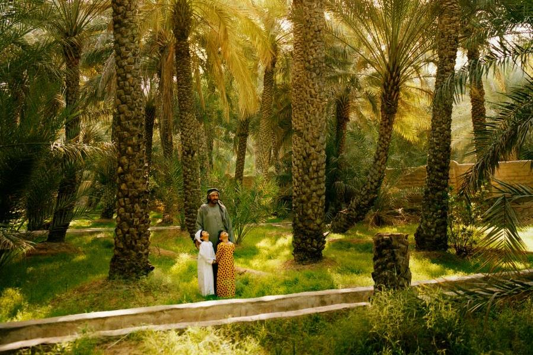

|
A one and a half hour drive from Abu Dhabi city, Al Ain is one of the world's oldest permanently inhabited settlements, and a UNESCO World Heritage Site.The city abounds in picturesque forts. One of the UAE’s most historic buildings, Al Jahili Fort was erected in 1891 to defend the city and protect precious palm groves and is home to a permanent exhibition of the work of British adventurer Sir Wilfred Thesiger and his 1940s crossings of the Rub Al Khali (The Empty Quarter) desert. The redeveloped Al Qattara Fort is now home to a brilliant arts center and gallery, offering hundreds of modern exhibits within its walls and with spaces for a variety of workshops – from pottery and painting to music and calligraphy. Get to grips with our culture and heritage with a visit to the city’s museums. With three main sections - archaeology, ethnography and gifts, Al Ain National Museum lets you explore various aspects of UAE life, including Bedouin jewelry and traditional musical instrument collections. The former home of the late UAE founder, Sheikh Zayed Bin Sultan Al Nahyan, Al Ain Palace Museum houses a large collection of material about the ruling family. Visitors can tour the private rooms and gardens once occupied by the ‘Father of the Nation’. For stunning views of the city, drive, take a cab or, if you have the stamina, cycle to the top of Jebel Hafeet – a rocky height dominating the city - via a winding highway. Rising 1,240 meters, this is the emirate’s highest peak, and UAE’s second.Other attractions include the Al Ain oasis with its cool, shady walkways and a 3,000-year-old falaj irrigation system, and the camel market-one of the last few remaining. This date palm oasis has been recognized by the United Nation’s Food and Agriculture Organization (FAO) for its importance as a repository of genetic resources, biodiversity and cultural heritage.Families should head to Al Ain Zoo – home to over 4,000 animals, and enjoy giraffe feeding, camel riding and ‘Elezba’ petting zoo. |
There are plenty of green public spaces for picnics and also playgrounds, a cafeteria and a train tour of the wildlife area. For a fun day out, try the renovated Hili Fun-City, the Gulf's oldest theme park, which now offers one of the cheapest days out, with entry no more than AED 40 (US$ 11).Watersports lovers need to try Wadi Adventure, the region’s only man-made white water rafting, kayaking and surf facility built in the foothills of the majestic Jebel Hafeet. The park’s 3.3 meter man-made surf wave is the world’s largest and its 1.7 kilometer kayaking channel network is the world’s longest. For a taste of the fast track, head to Al Ain Raceway and burn rubber at its 1.6 km go-karting track - Arabia’s largest.  |